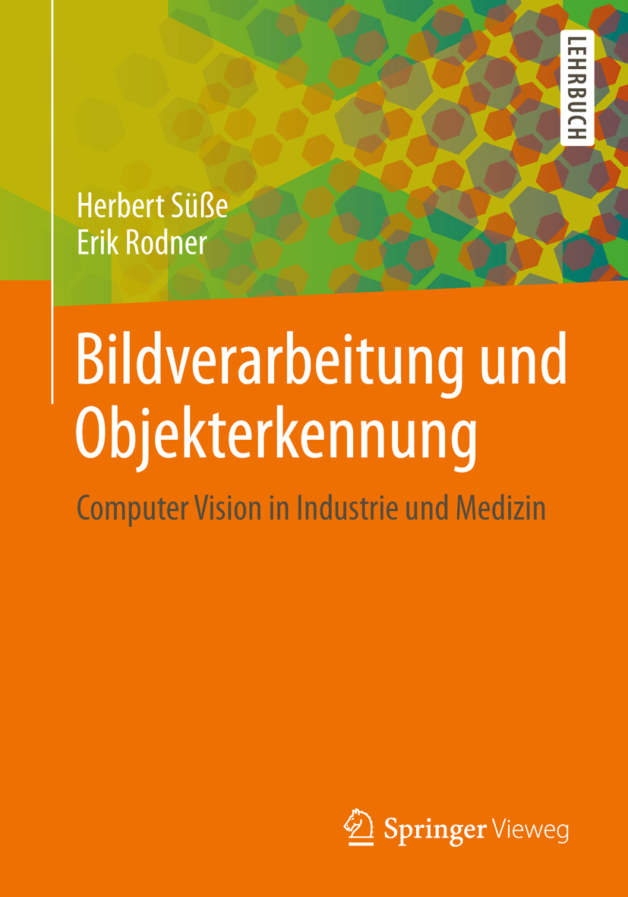
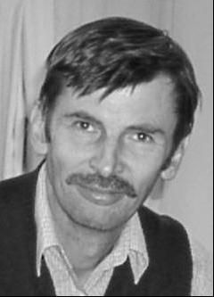

Bildverarbeitung und
Inhalte des Buches
|
Dieses Buch erläutert, wie Informationen automatisch aus Bildern extrahiert werden. Mit dieser sehr aktuellen Frage beschäftigt sich das Buch mittels eines Streifzuges durch die Bildverarbeitung. Dabei werden sowohl die mathematischen Grundlagen vieler Verfahren der 2D- und 3D Bildanalyse vermittelt als auch deren Nutzen anhand von Problemstellungen aus vielen Bereichen (Medizin, industrielle Bildverarbeitung, Objekterkennung) erläutert. Das Buch eignet sich sowohl für Studierende der Informatik, Mathematik und Ingenieurwissenschaften als auch für Anwender aus der industriellen Bildverarbeitung.
Das Buch wird unter der ISBN 978-3-8348-2605-3 erhältlich sein. |
 |
Autoren
|  |
Dr. Herbert Süße ist schon seit Jahren in Forschung und Lehre tätig und beschäftigt sich mit Invarianten und deren Anwendung für die 2D Bildanalyse. Er ist außerdem für seine Arbeiten im Bereich der Segmentierung bekannt. |
|
Dr. Erik Rodner arbeitet als wissenschaftlicher Mitarbeiter an der Universität Jena im Bereich der Objekterkennung und der Mustererkennung für visuelle Aufgabenstellungen. |